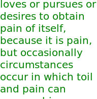

Render Text
Display a string of text using pango and cairo.
Text
String to display (utf8)
name: string
type: string
default: Hello
multiline:true
Font family
Font family (utf8)
name: font
type: string
default: Sans
Size
Font size in pixels.
name: size
type: double
default: 10.00
minimum: 0.00
maximum: 2048.00
ui-minimum: 0.00
ui-maximum: 2048.00
ui-gamma: 1.00
ui-step-small: 1.00
ui-step-big: 100.00
ui-digits: 1
unit:pixel-distance
Color
Color for the text (defaults to 'black')
name: color
type: color
default: rgb(0.0000, 0.0000, 0.0000)
Wrap width
Sets the width in pixels at which long lines will wrap. Use -1 for no wrapping.
name: wrap
type: int
default: -1
minimum: -1
maximum: 1000000
ui-minimum: -1
ui-maximum: 1000000
ui-gamma: 1.00
ui-step-small: 1
ui-step-big: 5
unit:pixel-distance
Wrap height
Sets the height in pixels according to which the text is vertically justified. Use -1 for no vertical justification.
name: vertical-wrap
type: int
default: 0
minimum: -1
maximum: 1000000
ui-minimum: -1
ui-maximum: 1000000
ui-gamma: 1.00
ui-step-small: 1
ui-step-big: 5
unit:pixel-distance
Justification
Alignment for multi-line text (0=Left, 1=Center, 2=Right)
name: alignment
type: int
default: 0
minimum: 0
maximum: 2
ui-minimum: 0
ui-maximum: 2
ui-gamma: 1.00
ui-step-small: 1
ui-step-big: 2
Vertical justification
Vertical text alignment (0=Top, 1=Middle, 2=Bottom)
name: vertical-alignment
type: int
default: 0
minimum: 0
maximum: 2
ui-minimum: 0
ui-maximum: 2
ui-gamma: 1.00
ui-step-small: 1
ui-step-big: 2
Width
Rendered width in pixels. (read only)
name: width
type: int
default: 0
minimum: -inf
maximum: +inf
ui-minimum: -inf
ui-maximum: +inf
ui-gamma: 1.00
ui-step-small: 1
ui-step-big: 5
Height
Rendered height in pixels. (read only)
name: height
type: int
default: 0
minimum: -inf
maximum: +inf
ui-minimum: -inf
ui-maximum: +inf
ui-gamma: 1.00
ui-step-small: 1
ui-step-big: 5
pads: output
parent-class: GeglOperationSource
categories: render
source: operations/external/text.c
 This page is part of the online GEGL Documentation, GEGL is a data flow based image processing library/framework, made to fuel GIMPs high-bit depth non-destructive editing future.
This page is part of the online GEGL Documentation, GEGL is a data flow based image processing library/framework, made to fuel GIMPs high-bit depth non-destructive editing future.